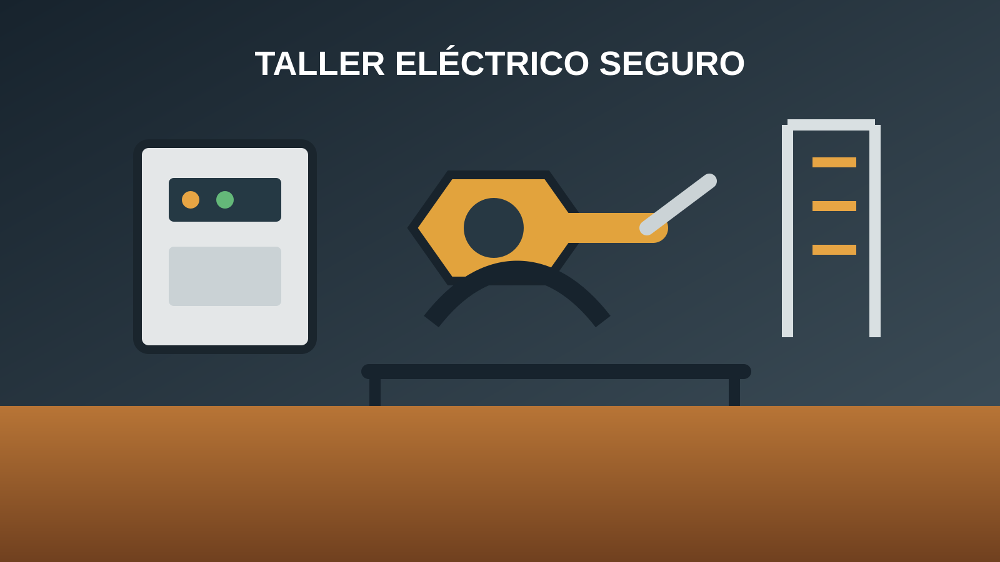

Un taller doméstico puede reunir una soldadora, esmeril angular, taladro, compresor, aspiradora y cargadores en una misma jornada. Conectar todo a un enchufe disponible no demuestra que el circuito esté preparado: la capacidad depende de la tensión, la corriente, la sección del conductor, la longitud, el método de instalación, la protección y la simultaneidad de uso. Esta guía presenta un método de pre-dimensionamiento para conversar con un instalador autorizado; no reemplaza el proyecto, la inspección ni la certificación exigible en Chile.

1. Comienza con un inventario real de herramientas
Antes de elegir un automático o comprar cable, anota cada equipo que podría conectarse en el taller. Busca en la placa de características la potencia en watts (W), la tensión nominal, la corriente, el factor de potencia cuando esté disponible y la corriente de arranque. En motores y compresores, la corriente inicial puede superar por un momento la corriente de funcionamiento. En una soldadora inverter, la potencia de entrada puede variar con el ciclo de trabajo y la corriente de soldadura.
| Equipo | Potencia de referencia | Observación de diseño |
|---|---|---|
| Taladro | 650 W | Motor; puede tener pico de arranque. |
| Esmeril angular | 900 W | El disco y la presión cambian la carga. |
| Compresor | 1.500 W | Revisar corriente de partida y presostato. |
| Soldadora inverter | Según placa | Usar corriente de entrada y ciclo de trabajo, no solo amperios de soldadura. |
| Iluminación LED | 100 W total | Es una carga pequeña, pero debe quedar protegida. |
Separa las cargas permanentes de las ocasionales. Una luminaria, un extractor o un cargador pueden permanecer encendidos durante horas; una herramienta manual suele funcionar por intervalos. También registra qué equipos necesitan un circuito dedicado. Un compresor grande, una soldadora de alta demanda o una sierra estacionaria no deberían compartir automáticamente el mismo circuito con enchufes generales sin que un profesional revise la instalación.
2. Calcula potencia, corriente y demanda
En una carga resistiva simple, la relación básica es potencia = tensión × corriente. En una red monofásica de 220 V, una herramienta de 2.200 W demanda aproximadamente 10 A cuando funciona en régimen. Para motores y fuentes electrónicas, el factor de potencia modifica la relación:
En la fórmula, I es la corriente en amperios, P la potencia activa en watts, V la tensión, FP el factor de potencia y η el rendimiento cuando sea necesario estimarlo. Si la placa entrega directamente los amperios, usa ese valor como referencia principal. No conviertas mecánicamente los amperios de salida de una soldadora en amperios de entrada: son magnitudes diferentes.
Ejemplo de cálculo
Supón un esmeril de 900 W conectado a 220 V. En el caso ideal, 900 ÷ 220 = 4,1 A. Si el equipo tiene factor de potencia 0,85 y rendimiento aproximado de 0,90, el valor estimado sería 900 ÷ (220 × 0,85 × 0,90) = 5,35 A. La placa puede indicar otro valor y esa indicación debe prevalecer. A continuación suma las cargas que realmente podrían funcionar al mismo tiempo, no todas las herramientas almacenadas en el taller.
| Regla práctica | La suma de potencias ayuda a estimar la demanda, pero no sustituye la revisión de corriente de arranque, temperatura, agrupamiento y normativa. |
| Ejemplo de simultaneidad | Taladro de 650 W + iluminación de 100 W + aspiradora de 1.200 W = 1.950 W, aproximadamente 8,9 A a 220 V en una estimación simple. |
| Margen | No diseñes para trabajar continuamente al límite del automático, del enchufe o del alargador. |
3. Selecciona el conductor y verifica la caída de tensión
La sección del conductor no se decide solo por la potencia. También intervienen la capacidad de conducción de corriente, la temperatura ambiente, el número de conductores agrupados, el tipo de canalización, el material aislante, la longitud y la caída de tensión. Un cable más grueso no corrige una protección mal elegida ni una conexión floja.
Para una estimación inicial de un circuito monofásico de cobre se puede usar:
L es la distancia de ida en metros, I la corriente, ρ la resistividad del cobre —aproximadamente 0,0175 Ω·mm²/m a 20 °C— y S la sección en mm². El factor 2 considera ida y retorno. El resultado debe expresarse como porcentaje de la tensión nominal.
Ejemplo de caída de tensión
En un recorrido de 30 m hasta un enchufe, con 10 A y conductor de cobre de 2,5 mm²: ΔV = 2 × 30 × 10 × 0,0175 ÷ 2,5 = 4,2 V. Sobre 220 V equivale a 1,9 %. Es una estimación a 20 °C y no reemplaza las tablas de ampacidad ni la verificación del método de instalación. En motores, una caída excesiva durante el arranque puede producir zumbido, disparos o calentamiento.
4. Protecciones indispensables para un taller
Un taller combina polvo, virutas, superficies metálicas, humedad ocasional, herramientas portátiles y cables que pueden sufrir golpes. El diseño debería contemplar, como mínimo, protección contra sobrecorriente y una protección diferencial adecuada a la instalación. La selección exacta, sensibilidad, coordinación y puesta a tierra deben ser definidas por un profesional según la normativa chilena vigente y las características del inmueble.
- Interruptor automático: protege el circuito frente a sobrecarga y cortocircuito. Su curva y corriente nominal deben ser compatibles con la carga y el conductor.
- Protección diferencial: ayuda a detectar corrientes de fuga hacia tierra. No sustituye la puesta a tierra ni el automático.
- Conductor de protección: debe llegar correctamente a las masas y al sistema de tierra. Nunca uses el neutro como reemplazo improvisado.
- Tablero identificado: rotula cada circuito y deja espacio para mantenimiento. Evita múltiples adaptadores y regletas en cascada.
- Enchufes adecuados: revisa corriente nominal, estado mecánico, grado de protección y calidad de los bornes.
La protección diferencial no debe confundirse con una protección contra arco eléctrico ni con un dispositivo que autoriza trabajar en condiciones húmedas. Antes de intervenir, corta la energía, verifica ausencia de tensión con un instrumento apropiado y aplica las medidas de bloqueo que correspondan. En Chile, consulta la información oficial de la Superintendencia de Electricidad y Combustibles (SEC) y utiliza un instalador autorizado para ejecutar o modificar el circuito.
5. Considera el uso simultáneo y los motores
El error más frecuente es sumar todas las potencias nominales y convertirlas en una cifra que el circuito nunca experimentará, o ignorar por completo los arranques. Ambos extremos pueden fallar. Define escenarios: trabajo liviano, uso normal y máxima demanda. Por ejemplo, el compresor puede arrancar justo cuando enciendes el esmeril; la soldadora puede compartir espacio con iluminación y extractor; una sierra puede necesitar un circuito separado.
| Situación | Qué revisar | Decisión prudente |
|---|---|---|
| Motor dispara al arrancar | Corriente de partida, curva del automático, extensión y tensión en el enchufe. | Medir y revisar; no sobredimensionar la protección a ciegas. |
| Enchufe o clavija caliente | Corriente, falso contacto, apriete, sección y calidad del accesorio. | Desconectar y reemplazar la conexión defectuosa. |
| Luces parpadean al usar soldadora | Caída de tensión, circuito compartido y capacidad de alimentación. | Separar cargas y solicitar evaluación del instalador. |
| Automático dispara después de minutos | Sobrecarga térmica, agrupamiento, temperatura o herramienta defectuosa. | Reducir carga y medir antes de cambiar componentes. |
6. Errores que conviene evitar
- Usar un alargador doméstico como instalación permanente: un alargador es una conexión temporal y debe tener sección, longitud y corriente apropiadas. Revisa también nuestra guía para elegir alargadores eléctricos.
- Confiar en una zapatilla con muchos enchufes: la cantidad de tomas no aumenta la capacidad del circuito.
- Comparar solo watts: motores, soldadoras y fuentes conmutadas pueden tener comportamientos distintos.
- Ignorar la longitud: un circuito largo puede presentar más caída de tensión y calentamiento.
- Mezclar neutros de diferenciales: puede provocar disparos y una condición insegura.
- Trabajar sin tierra: una carcasa metálica puede quedar energizada ante una falla.
- Usar cables dañados: cortes, aplastamientos, aislación endurecida y clavijas flojas requieren retiro inmediato.
7. Lista de comprobación antes de energizar
- ¿Las herramientas tienen placa legible con tensión, potencia y corriente?
- ¿La carga simultánea fue calculada con los equipos que realmente se usarán?
- ¿Se revisó la sección, longitud, canalización y temperatura del conductor?
- ¿El automático protege al conductor y está coordinado con la instalación?
- ¿Existe diferencial, puesta a tierra y continuidad del conductor de protección?
- ¿Los enchufes están firmes, secos, sin calentamiento ni adaptadores improvisados?
- ¿El tablero está identificado y el circuito fue revisado por un instalador autorizado?
Para necesidades específicas, complementa esta guía con la guía de consumo eléctrico de una soldadora doméstica, la información sobre tableros de transferencia automática y los criterios de seguridad del fabricante de cada herramienta.
Conclusión
Dimensionar un circuito para un taller doméstico requiere más que elegir un cable grueso o instalar un automático de mayor amperaje. El método correcto empieza con las placas de las herramientas, estima la corriente real, considera arranques y simultaneidad, verifica capacidad de conducción y caída de tensión, y termina con protecciones coordinadas, puesta a tierra y revisión profesional. Si aparece olor a plástico, calentamiento, chisporroteo, ruido anormal o disparos repetidos, detén el trabajo: esos síntomas indican que la instalación o el equipo necesita diagnóstico.
Preguntas frecuentes
¿Qué potencia soporta un circuito de 10 A a 220 V?
En una cuenta ideal, 10 A × 220 V equivale a 2.200 W. La capacidad práctica depende del conductor, la protección, el método de instalación, la temperatura, la caída de tensión, el tipo de carga y las exigencias normativas. No uses este resultado como autorización para cargar el circuito continuamente al máximo.
¿Puedo conectar una soldadora y un esmeril al mismo enchufe?
Puede ser inadecuado si la suma de las corrientes, la corriente de arranque o la protección supera la capacidad del circuito. Revisa las placas y pide una evaluación antes de usar ambas herramientas simultáneamente.
¿Un cable de mayor sección soluciona todos los problemas?
No. Una sección mayor puede reducir la caída de tensión, pero el circuito completo debe incluir protecciones, bornes, enchufes, canalización y puesta a tierra compatibles. También debe revisarse la conexión al tablero.
¿Quién debe ejecutar una modificación eléctrica en Chile?
Una modificación permanente debe ser evaluada y ejecutada por personal competente y, cuando corresponda, por un instalador autorizado ante la SEC. La guía sirve para preparar preguntas y datos, no para reemplazar un proyecto eléctrico.
¿También necesitas elegir herramientas y accesorios?
Consulta nuestras guías sobre soldadoras, alargadores, cables y soluciones para el hogar.
Ver más guías de ferretería